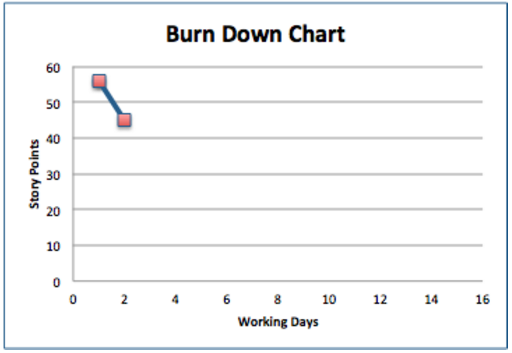
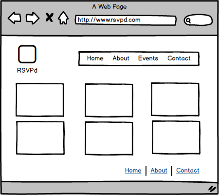
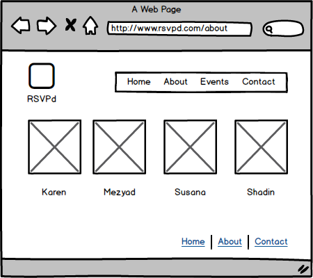

In Sprint 2, we completed the following activities:
| #No | Story | Estimate | Responsible |
|---|---|---|---|
| 2 | Every page has HTML5 header and footer elements. | 2 | Shadin |
| 5 | An unordered list of events, including their details (LOOK AND FEEL) | 4 | Susana |
| 6 | Each list element displays pertinent information about the event: title, date, and how many people are RSVPd etc. It should include the default events that come with the project. | 2 | Karen |
| 7 | Every event li element should have an HTML5 time tag that has a datetime attribute equal to the time in ISO 8601 format. The text of the tag should be the datetime in natural language, including the time. | 1 | Karen |
| 6 | Each list element displays pertinent information about the event: title, date, and how many people are RSVPd etc. It should include the default events that come with the project. | 2 | Karen |
| 10 | I can click a link to take me to /events/new. The link has id="new" | 1 | Shadin |
| 11 | As a user, I can visit your API at /api/events and retrieve an object with key events containing all events in JSON format. | 6 | Mezyad |
| 12 | your names, each in a span tag with id attribute set to your class nickname (LOOK AND FEEL) | 2 | Shadin, Susana |
We completed a total of 12 story points this sprint against the 14 that we had planned. We intend to catch up on the remaining 2 story points in the next sprint.
We will be running team meetings on Tuesday and Friday to discuss our progress on the sprint and have time for feedback.
These mockups were created using the Balsamiq tool.
 